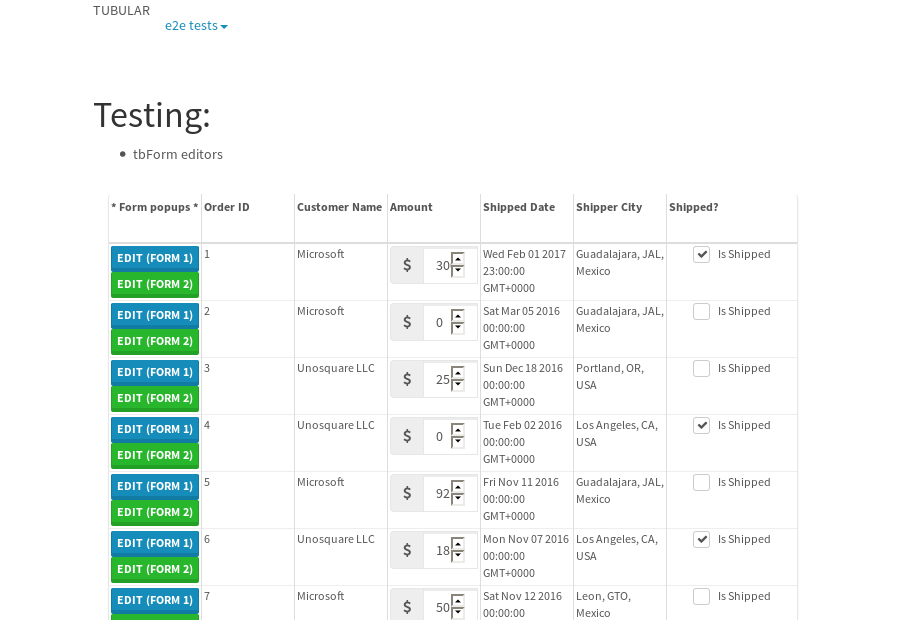

tbColumn.Grid Sorting - 187.43sTests: 5Skipped: 0Failures: 3 should sort data in ascending order then on descending order when sorting by Order Id column - 46.112sExpected '1' to be '500'.✗Expected '20' to be '481'.✗Tests passed: 50.00%should order data in ascending order when click-sorting an unsorted text column - 25.248sTests passed: 100.00%should order data in descending order when click-sorting an ascending-sorted text column - 44.96sExpected 'Advanced Technology Systems' to be 'Vesta'.✗Tests passed: 0.00%should order data in ascending order when click-sorting an unsorted date column - 25.404sTests passed: 100.00%should order data in descending order when click-sorting twice an unsorted date column - 45.699sExpected '12/30/2015' to match /1\/01\/2016/.✗Tests passed: 0.00%
tbEmptyForm - 5.833sTests: 3Skipped: 0Failures: 0 should have an empty required field - 2.024sTests passed: 100.00%should not be able to click on save - 0.027sTests passed: 100.00%should load default value for numeric field - 0.029sTests passed: 100.00%
Tubular Filters.tbColumnFilter - 100.556sTests: 12Skipped: 0Failures: 0 should cancel filtering when clicking outside filter-popover - 7.797sTests passed: 100.00%should disable Value text-input for "None" filter - 6.229sTests passed: 100.00%should disable apply button for "None" filter - 5.866sTests passed: 100.00%should decorate popover button when showing data is being filtered for its column - 11.486sTests passed: 100.00%should correctly filter data for the "Equals" filtering option - 7.738sTests passed: 100.00%should correctly filter data for the "Not Equals" filtering option - 7.66sTests passed: 100.00%should correctly filter data for the "Contains" filtering option - 7.85sTests passed: 100.00%should correctly filter data for the "Not Contains" filtering option - 8.223sTests passed: 100.00%should correctly filter data for the "Starts With" filtering option - 6.437sTests passed: 100.00%should correctly filter data for the "Not Starts With" filtering option - 6.307sTests passed: 100.00%should correctly filter data for the "Ends With" filtering option - 6.238sTests passed: 100.00%should correctly filter data for the "Not Ends With" filtering option - 6.18sTests passed: 100.00%
Tubular Filters.tbColumnDateTimeFilter - 128.268sTests: 12Skipped: 0Failures: 0 should cancel filtering when clicking outside filter-popover - 6.459sTests passed: 100.00%should disable Value text-input for "None" filter - 5.817sTests passed: 100.00%should disable apply button for "None" filter - 5.819sTests passed: 100.00%should clear filtering when clicking on Clean button - 17.439sTests passed: 100.00%should decorate popover button when showing data is being filtered for its column - 11.383sTests passed: 100.00%should correctly filter data for the "Equals" filtering option - 6.215sTests passed: 100.00%should correctly filter data for the "Not Equals" filtering option - 6.625sTests passed: 100.00%should correctly filter data for the "Between" filtering option - 11.484sTests passed: 100.00%should correctly filter data for the "Greater-or-equal" filtering option - 11.202sTests passed: 100.00%should correctly filter data for the "Greater" filtering option - 11.459sTests passed: 100.00%should correctly filter data for the "Less-or-equal" filtering option - 11.52sTests passed: 100.00%should correctly filter data for the "Less" filtering option - 11.591sTests passed: 100.00%
Tubular Filters.tbColumnOptionsFilter - 82.459sTests: 3Skipped: 0Failures: 0 should cancel filtering when clicking outside filter-popover - 7.863sTests passed: 100.00%should decorate popover button when showing data is being filtered for its column - 11.087sTests passed: 100.00%should filter column-elements in accordance to the selected filter when selecting a single option - 51.737sTests passed: 100.00%
Tubular Filters.tbTextSearch - 44.515sTests: 5Skipped: 0Failures: 0 min-chars is not set - 0.082sTests passed: 100.00%should filter data in searchable-column customer name to matching inputted text, starting from 3 characters - 5.929sTests passed: 100.00%should filter data in searchable-column shipper city to matching inputted text, starting from 3 characters - 11.178sTests passed: 100.00%should show clear button when there is inputted text only - 5.961sTests passed: 100.00%should clear filtering when clicking clear button - 15.629sTests passed: 100.00%
tbForm related components.tbCheckboxField - 21.376sTests: 2Skipped: 0Failures: 1 should save changes on "SAVE" - 18.295sExpected 51 to be -1.✗Tests passed: 50.00%should discard changes on "CANCEL" - 1.112sTests passed: 100.00%
tbForm related components.tbDropDownEditor - 22.811sTests: 5Skipped: 0Failures: 0 should set initial input value to the value of "value" attribute when defined - 0.896sTests passed: 100.00%should show the component name value in a label field when "showLabel" attribute is true - 0.911sTests passed: 100.00%should show a help field equal to this attribute, is present - 0.884sTests passed: 100.00%should submit modifications to item/server when clicking form "Save" - 18.155sTests passed: 100.00%should NOT submit modifications to item/server when clicking form "Cancel" - 1.176sTests passed: 100.00%
tbForm related components.tbTextArea - 24.962sTests: 7Skipped: 0Failures: 0 should set initial input value to the value of "value" attribute when defined - 0.912sTests passed: 100.00%should be invalidated when the number of chars is not in the range of "min" and "max" attributes - 1.55sTests passed: 100.00%should show the component name value in a label field when "showLabel" attribute is true - 0.781sTests passed: 100.00%should show a help field equal to this attribute, is present - 0.756sTests passed: 100.00%should require the field when the attribute "required" is true - 0.844sTests passed: 100.00%should submit modifications to item/server when clicking form "Save" - 18.077sTests passed: 100.00%should NOT submit modifications to item/server when clicking form "Cancel" - 1.201sTests passed: 100.00%
tbForm related components.tbDateEditor - 25.49sTests: 6Skipped: 0Failures: 0 should set initial date value to the value of "value" attribute when defined - 1.112sTests passed: 100.00%should be invalidated when the date is not in the range of "min" and "max" attributes - 1.409sTests passed: 100.00%should show the component name value in a label field when "showLabel" attribute is true - 0.909sTests passed: 100.00%should show a help field equal to this attribute, is present - 1.081sTests passed: 100.00%should submit modifications to item/server when clicking form "Save" - 18.344sTests passed: 100.00%should NOT submit modifications to item/server when clicking form "Cancel" - 1.539sTests passed: 100.00%
tbForm related components.tbTypeaheadEditor - 32.192sTests: 7Skipped: 0Failures: 1 should show an options list when there is an API-info/component entered-data - 1.959sTests passed: 100.00%should select the option clicked - 1.952sTests passed: 100.00%should show a "delete" button when an option/match is selected, and delete the option if button is clicked - 2.422sTests passed: 100.00%should show a label value equal to the component name when "showLabel" attribute is true - 1.309sTests passed: 100.00%should require a value when "require" attribute is true - 2.751sTests passed: 100.00%should submit modifications to item/server when clicking form "Save" - 18.773sExpected 'Guadalajara, JAL, Mexico' to match 'Portland, OR, USA'.✗Tests passed: 0.00%should NOT submit modifications to item/server when clicking form "Cancel" - 1.665sTests passed: 100.00%
tbForm related components.tbSimpleEditor - 26.507sTests: 9Skipped: 0Failures: 0 should set initial input value to the value of "value" attribute when defined - 0.635sTests passed: 100.00%should be invalidated when the number of chars is not in the range of "min" and "max" attributes - 1.231sTests passed: 100.00%should show the component name value in a label field when "showLabel" attribute is true - 0.71sTests passed: 100.00%should set input placeholder to the value of "placeholder" attribute - 1.064sTests passed: 100.00%should validate the control using the "regex" attribute, if present - 0.79sTests passed: 100.00%should show a help field equal to this attribute, is present - 0.858sTests passed: 100.00%should require the field when the attribute "required" is true - 1.175sTests passed: 100.00%should submit modifications to item/server when clicking form "Save" - 18.275sTests passed: 100.00%should NOT submit modifications to item/server when clicking form "Cancel" - 1.137sTests passed: 100.00%
tbForm related components.tbNumericEditor - 24.368sTests: 7Skipped: 0Failures: 0 should set initial component value to the value of "value" attribute when defined - 0.731sTests passed: 100.00%should be invalidated when the entered number is not in the range of "min" and "max" attributes - 1.299sTests passed: 100.00%should show the component name value in a label field when "showLabel" attribute is true - 0.84sTests passed: 100.00%should show a help field equal to this attribute, is present - 0.813sTests passed: 100.00%should require the field when the attribute "required" is true - 0.918sTests passed: 100.00%should submit modifications to item/server when clicking form "Save" - 17.891sTests passed: 100.00%should NOT submit modifications to item/server when clicking form "Cancel" - 1.058sTests passed: 100.00%
tbForm Connection Error NoModelKey - 4.232sTests: 1Skipped: 0Failures: 0 tbForm connection error functionality - 0.005sTests passed: 100.00%
tbForm Connection Error NoServerUrl - 4.981sTests: 1Skipped: 0Failures: 0 tbForm connection error functionality - 0.003sTests passed: 100.00%
tbGridComponents - 36.419sTests: 6Skipped: 0Failures: 1 should add item with newRow method - 6.374sTests passed: 100.00%should add item with newRow method and cancel action - 0.49sTests passed: 100.00%should update item with tbSaveButton - 2.469sTests passed: 100.00%should NOT update item on cancel Update action - 1.256sTests passed: 100.00%should remove item with tbRemoveButton - 21.107sExpected 45 not to be 45, 'should remove the row from the table'.✗Tests passed: 50.00%should NOT remove item on cancel Remove action - 0.89sTests passed: 100.00%
tbGridPager.navigation buttons - 2.926sTests: 1Skipped: 0Failures: 0 should perform no action when clicking on the numbered navigation button corresponding to the current-showing results page - 0.722sTests passed: 100.00%
tbGridPager.navigation buttons.first/non-last results page related functionality - 0.82sTests: 2Skipped: 0Failures: 0 should disable "first" and "previous" navigation buttons when in first results page - 0.132sTests passed: 100.00%should enable "last" and "next" navigation buttons when in a results page other than last - 0.688sTests passed: 100.00%
tbGridPager.navigation buttons.last/non-first results page related functionality - 1.383sTests: 2Skipped: 0Failures: 0 should disable "last" and "next" navigation buttons when in last results page - 0.659sTests passed: 100.00%should enable "first" and "previous" navigation buttons when in a results page other than first - 0.723sTests passed: 100.00%
tbGridPager.page navigation - 4.739sTests: 5Skipped: 0Failures: 0 should go to next results page when clicking on next navigation button - 1.274sTests passed: 100.00%should go to previous results page when clicking on previous navigation button - 1.275sTests passed: 100.00%should go to last results page when clicking on last navigation button - 0.769sTests passed: 100.00%should go to first results page when clicking on first navigation button - 0.76sTests passed: 100.00%should go to corresponding results page when clicking on a numbered navigation button - 0.66sTests passed: 100.00%
tbGridPagerInfo - 7.376sTests: 2Skipped: 0Failures: 0 should show text in accordance to numbered of filter rows and current results-page - 2.43sTests passed: 100.00%should show count in footer - 0.031sTests passed: 100.00%
tbPageSizeSelctor - 16.522sTests: 4Skipped: 0Failures: 0 should filter up to 10 data rows per page when selecting a page size of "10" - 3.433sTests passed: 100.00%should filter up to 20 data rows per page when selecting a page size of "20" - 2.668sTests passed: 100.00%should filter up to 50 data rows per page when selecting a page size of "50" - 3.538sTests passed: 100.00%should filter up to 100 data rows per page when selecting a page size of "100" - 3.086sTests passed: 100.00%
tbSingleForm - 32.89sTests: 8Skipped: 1Failures: 1 should load correct info - 0s***Skipped***Tests passed: 0%should change customer name - 4.18sTests passed: 100.00%should save it - 5.595sExpected '' to be 'Saved'.✗Tests passed: 50.00%should clear the inputs - 4.464sTests passed: 100.00%should update - 4.566sTests passed: 100.00%should reset editor - 4.739sTests passed: 100.00%should not save if not Changes - 4.73sTests passed: 100.00%should not be able to click on save - 4.614sTests passed: 100.00%


{kind=link}